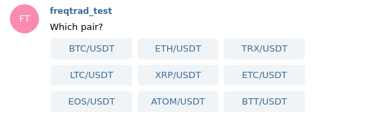

Telegram 使用¶
设置您的 Telegram 机器人¶
下面我们解释如何创建您的 Telegram 机器人，以及如何获取您的 Telegram 用户 ID。
1. 创建您的 Telegram 机器人¶
与 Telegram BotFather 开始聊天
发送消息 /newbot。
BotFather 响应：
好的，一个新机器人。我们如何称呼它？请为您的机器人选择一个名称。
选择您机器人的公共名称（例如 Freqtrade bot）
BotFather 响应：
好的。现在让我们为您的机器人选择一个用户名。它必须以
bot结尾。例如：TetrisBot 或 tetris_bot。
选择您机器人的名称 ID 并将其发送给 BotFather（例如 "My_own_freqtrade_bot"）
BotFather 响应：
完成！恭喜您的新机器人。您将在
t.me/yourbots_name_bot找到它。您现在可以为您的机器人添加描述、关于部分和个人资料图片，请参阅 /help 获取命令列表。顺便说一句，当您完成创建您的酷炫机器人后，如果您想要更好的用户名，请联系我们的机器人支持。只需确保机器人在执行此操作之前完全运行。使用此令牌访问 HTTP API：
22222222:APITOKEN有关 Bot API 的描述，请参阅此页面：https://core.telegram.org/bots/api 机器人将返回给您令牌（API 密钥）
复制 API 令牌（上面示例中的 22222222:APITOKEN）并将其用于配置参数 token。
不要忘记通过点击 /START 按钮与您的机器人开始对话
2. Telegram user_id¶
获取您的用户 ID¶
与 userinfobot 对话
获取您的 "Id"，您将将其用于配置参数 chat_id。
使用群组 ID¶
要获取群组 ID，您可以将机器人添加到群组，启动 freqtrade，并发出 /tg_info 命令。
这将返回群组 ID 给您，而无需使用一些随机机器人。
虽然仍需要 "chat_id"，但此命令不需要将其设置为特定的群组 ID。
如果需要，响应还将包含 "topic_id" - 两者都以可以直接复制/粘贴到配置中的格式。
{
"enabled": true,
"token": "********",
"chat_id": "-1001332619709",
"topic_id": "122"
}
对于 Freqtrade 配置，您可以使用完整值（包括 -）作为字符串：
"chat_id": "-1001332619709"
使用 telegram 群组
使用 telegram 群组时，您向 telegram 群组的每个成员提供对您的 freqtrade 机器人和通过 telegram 可能的所有命令的访问权限。请确保您信任 telegram 群组中的每个人，以避免不愉快的意外。
群组主题 ID¶
要在群组中使用特定主题，您可以在配置中使用 topic_id 参数。这将允许您在群组中的特定主题中使用机器人。
如果没有这个，如果为群组聊天启用了主题，机器人将始终响应群组中的通用频道。
"chat_id": "-1001332619709",
"topic_id": "3"
类似于群组 ID - 您可以从主题/线程中使用 /tg_info 获取正确的主题 ID。
授权用户¶
对于群组，限制谁可以向机器人发送命令可能很有用。
如果 "authorized_users": [] 存在且为空，则不允许任何用户控制机器人。
在下面的示例中，只有 ID 为 "1234567" 的用户被允许控制机器人 - 所有其他用户只能接收消息。
"chat_id": "-1001332619709",
"topic_id": "3",
"authorized_users": ["1234567"]
控制 telegram 噪音¶
Freqtrade 提供了控制 telegram 机器人详细程度的工具。 每个设置都有以下可能的值：
on- 将发送消息，用户将收到通知。silent- 将发送消息，通知将没有声音/振动。off- 完全跳过发送该类型的消息。
显示不同设置的配置示例：
"telegram": {
"enabled": true,
"token": "your_telegram_token",
"chat_id": "your_telegram_chat_id",
"allow_custom_messages": true,
"notification_settings": {
"status": "silent",
"warning": "on",
"startup": "off",
"entry": "silent",
"entry_fill": "on",
"entry_cancel": "silent",
"exit": {
"roi": "silent",
"emergency_exit": "on",
"force_exit": "on",
"exit_signal": "silent",
"trailing_stop_loss": "on",
"stop_loss": "on",
"stoploss_on_exchange": "on",
"custom_exit": "silent", // 未指定退出原因的自定义退出
"partial_exit": "on",
// "custom_exit_message": "silent", // 禁用单个自定义退出原因
"*": "off" // 禁用所有其他退出原因
},
// "exit": "off", // 禁用所有退出消息的简化配置
"exit_cancel": "on",
"exit_fill": "off",
"protection_trigger": "off",
"protection_trigger_global": "on",
"strategy_msg": "off",
"show_candle": "off"
},
"reload": true,
"balance_dust_level": 0.01
},
entry通知在下单时发送，而entry_fill通知在订单在交易所成交时发送。exit通知在下单时发送，而exit_fill通知在订单在交易所成交时发送。 退出消息（exit和exit_fill）可以在各个退出原因级别进一步控制，使用特定退出原因作为键。所有退出原因的默认值是on- 但可以通过特殊的*键配置 - 这将作为所有未明确定义的退出原因的通配符。*_fill通知默认关闭，必须显式启用。protection_trigger通知在保护触发时发送，protection_trigger_global通知在全球保护触发时触发。strategy_msg- 接收来自策略的通知，通过策略中的self.dp.send_msg()发送 更多详情。show_candle- 在入场/出场消息中显示蜡烛图值。唯一可能的值是"ohlc"或"off"。balance_dust_level将定义/balance命令将什么视为"零头" - 余额低于此值的货币将显示。allow_custom_messages完全禁用策略消息。reload允许您禁用选定消息上的重新加载按钮。
创建自定义键盘（命令快捷按钮）¶
Telegram 允许我们创建一个带有命令按钮的自定义键盘。 默认的自定义键盘如下所示。
[
["/daily", "/profit", "/balance"], # 第 1 行，3 个命令
["/status", "/status table", "/performance"], # 第 2 行，3 个命令
["/count", "/start", "/stop", "/help"] # 第 3 行，4 个命令
]
用法¶
您可以在 config.json 中创建自己的键盘：
"telegram": {
"enabled": true,
"token": "your_telegram_token",
"chat_id": "your_telegram_chat_id",
"keyboard": [
["/daily", "/stats", "/balance", "/profit"],
["/status table", "/performance"],
["/reload_config", "/count", "/logs"]
]
},
支持的命令
只允许以下命令。不支持命令参数！
/start、/pause、/stop、/status、/status table、/trades、/profit、/performance、/daily、/stats、/count、/locks、/balance、/stopentry、/reload_config、/show_config、/logs、/whitelist、/blacklist、/help、/version、/marketdir
Telegram 命令¶
默认情况下，Telegram 机器人显示预定义的命令。某些命令
只能通过将它们发送给机器人来使用。下表列出了
官方命令。您可以随时使用 /help 寻求帮助。
| 命令 | 描述 |
|---|---|
| 系统命令 | |
/start |
启动交易机器人 |
/pause | /stopentry | /stopbuy |
暂停交易机器人。根据其规则优雅地处理未平仓交易。不要进入新头寸。 |
/stop |
停止交易机器人 |
/reload_config |
重新加载配置文件 |
/show_config |
显示当前配置的相关操作设置部分 |
/logs [limit] |
显示最后几条日志消息。 |
/help |
显示帮助消息 |
/version |
显示版本 |
| 状态 | |
/status |
列出所有未平仓交易 |
/status <trade_id> |
列出一个或多个特定交易。用空格分隔多个 |
/status table |
以表格格式列出所有未平仓交易。待处理的买入订单用星号 () 标记，待处理的卖出订单用双星号 (*) 标记 |
/order <trade_id> |
列出一个或多个特定交易的订单。用空格分隔多个 |
/trades [limit] |
以表格格式列出所有最近关闭的交易。 |
/count |
显示已使用和可用的交易数量 |
/locks |
显示当前锁定的交易对。 |
/unlock <pair or lock_id> |
移除此交易对（或此锁定 ID）的锁定。 |
/marketdir [long | short | even | none] |
更新代表当前市场方向的用户管理变量。如果未提供方向，将显示当前设置的方向。 |
/list_custom_data <trade_id> [key] |
列出交易 ID 和键组合的 custom_data。如果未提供键，它将列出为该交易 ID 找到的所有键值对。 |
| 修改交易状态 | |
/forceexit <trade_id> | /fx <tradeid> |
立即退出给定交易（忽略 minimum_roi）。 |
/forceexit all | /fx all |
立即退出所有未平仓交易（忽略 minimum_roi）。 |
/fx |
/forceexit 的别名 |
/forcelong <pair> [rate] |
立即买入给定交易对。价格是可选的，仅适用于限价订单。（force_entry_enable 必须设置为 True） |
/forceshort <pair> [rate] |
立即做空给定交易对。价格是可选的，仅适用于限价订单。这只在非现货市场上有效。（force_entry_enable 必须设置为 True） |
/delete <trade_id> |
从数据库中删除特定交易。尝试关闭未完成的订单。需要在交易所手动处理此交易。 |
/reload_trade <trade_id> |
从交易所重新加载交易。仅在实盘中有效，可能有助于恢复在交易所手动卖出的交易。 |
/cancel_open_order <trade_id> | /coo <trade_id> |
取消交易的未完成订单。 |
| 指标 | |
/profit [<n>] |
显示过去 n 天（默认所有交易）您已关闭交易的盈亏摘要以及一些性能统计 |
/profit_[long|short] [<n>] |
显示过去 n 天（默认所有交易）您单方向已关闭交易的盈亏摘要以及一些性能统计 |
/performance |
显示按交易对分组的每个已完成交易的性能 |
/balance |
显示机器人管理的每种货币的余额 |
/balance full |
显示每种货币的账户余额 |
/daily <n> |
显示过去 n 天（n 默认为 7）每天的盈亏 |
/weekly <n> |
显示过去 n 周（n 默认为 8）每周的盈亏 |
/monthly <n> |
显示过去 n 个月（n 默认为 6）每月的盈亏 |
/stats |
按退出原因显示盈亏以及买入和卖出的平均持有时间 |
/exits |
按退出原因显示盈亏以及买入和卖出的平均持有时间 |
/entries |
按退出原因显示盈亏以及买入和卖出的平均持有时间 |
/whitelist [sorted] [baseonly] |
显示当前白名单。可选择按字母顺序显示和/或仅显示每个交易对的基础货币。 |
/blacklist [pair] |
显示当前黑名单，或将交易对添加到黑名单。 |
Telegram 命令实际操作¶
下面，您将收到每个命令的 Telegram 消息示例。
/start¶
状态：
running
/pause | /stopentry | /stopbuy¶
状态：
paused, no more entries will occur from now. Run /start to enable entries.
通过将状态更改为 paused 来阻止机器人打开新交易。
未平仓交易将继续根据其常规规则进行管理（ROI/出场信号、止损等）。
请注意，头寸调整仍然有效，但仅在退出侧 - 这意味着当机器人处于 paused 状态时，它只能减少未平仓交易的头寸大小。
之后，给机器人时间关闭未平仓交易（可以通过 /status table 检查）。
一旦所有头寸关闭，运行 /stop 完全停止机器人。
使用 /start 将机器人恢复到 running 状态，允许它打开新头寸。
警告
暂停/停止入场信号仅在机器人运行时有效，并且不会持久化，因此重启机器人将导致此重置。
/stop¶
Stopping trader ...状态：stopped
/status¶
对于每个未平仓交易，机器人将向您发送以下消息。 入场标签可通过策略配置。
交易 ID：
123(1 天前)
当前交易对： CVC/BTC
方向： Long
杠杆： 1.0
数量：26.64180098
入场标签： Awesome Long Signal
开盘价：0.00007489
当前价：0.00007489
未实现利润：12.95%
止损：0.00007389 (-0.02%)
/status table¶
以表格格式返回所有未平仓交易的状态。
ID L/S 交易对 时间 利润
---- -------- ------- --------
67 L SC/BTC 1 天 13.33%
123 S CVC/BTC 1 小时 12.95%
/count¶
返回已使用和可用的交易数量。
当前 最大
--------- -----
2 10
/profit¶
也可用作 /profit_long 和 /profit_short 以仅显示多头或空头交易的利润。
返回您的盈亏和性能摘要。
ROI： 已关闭交易
∙0.00485701 BTC (2.2%) (15.2 Σ%)
∙62.968 USD
ROI： 所有交易
∙0.00255280 BTC (1.5%) (6.43 Σ%)
∙33.095 EUR总交易数：
138
机器人启动：2022-07-11 18:40:44
首次交易打开：3 天前
最新交易打开：2 分钟前
平均持续时间：2:33:45
最佳表现：PAY/BTC: 50.23%
交易量：0.5 BTC
利润因子：1.04
盈利 / 亏损：102 / 36
胜率：73.91%
期望值（比率）：4.87 (1.66)
最大回撤：9.23% (0.01255 BTC)
相对利润 1.2% 是每笔交易的平均利润。
相对利润 15.2 Σ% 基于起始资本 - 因此在这种情况下，起始资本为 0.00485701 * 1.152 = 0.00738 BTC。
起始资本（）要么从 available_capital 设置中获取，要么通过使用当前钱包大小 - 利润来计算。
利润因子 计算为总利润 / 总亏损 - 应作为策略的整体指标。
期望值 对应于每单位风险货币的平均回报，即胜率和风险回报比（盈利交易的平均收益与亏损交易的平均损失相比）。
期望值比率 是基于所有过去交易的性能，后续交易的预期利润或损失。
最大回撤 对应于回测指标 Absolute Drawdown (Account) - 计算为 (Absolute Drawdown) / (DrawdownHigh + startingBalance)。
机器人启动日期 将指机器人首次启动的日期。对于较旧的机器人，这将默认为第一笔交易的打开日期。
/forceexit ¶
BINANCE: Exiting BTC/LTC with limit
0.01650000 (profit: ~-4.07%, -0.00008168)
Tip
You can get a list of all open trades by calling /forceexit without parameter, which will show a list of buttons to simply exit a trade.
This command has an alias in /fx - which has the same capabilities, but is faster to type in "emergency" situations.
/forcelong [rate] | /forceshort [rate]¶
/forcebuy <pair> [rate] is also supported for longs but should be considered deprecated.
BINANCE: Long ETH/BTC with limit
0.03400000(1.000000 ETH,225.290 USD)
Omitting the pair will open a query asking for the pair to trade (based on the current whitelist).
Trades created through /forcelong will have the buy-tag of force_entry.

Note that for this to work, force_entry_enable needs to be set to true.
/performance¶
Return the performance of each crypto-currency the bot has sold.
Performance:
1.RCN/BTC 0.003 BTC (57.77%) (1)
2.PAY/BTC 0.0012 BTC (56.91%) (1)
3.VIB/BTC 0.0011 BTC (47.07%) (1)
4.SALT/BTC 0.0010 BTC (30.24%) (1)
5.STORJ/BTC 0.0009 BTC (27.24%) (1)
...
The relative performance is calculated against the total investment in the currency, aggregating all filled entries for the currency.
/balance¶
Return the balance of all crypto-currency your have on the exchange.
Currency: BTC
Available: 3.05890234
Balance: 3.05890234
Pending: 0.0Currency: CVC
Available: 86.64180098
Balance: 86.64180098
Pending: 0.0
/daily ¶
Per default /daily will return the 7 last days. The example below if for /daily 3:
Daily Profit over the last 3 days:
Day (count) USDT USD Profit %
-------------- ------------ ---------- ----------
2022-06-11 (1) -0.746 USDT -0.75 USD -0.08%
2022-06-10 (0) 0 USDT 0.00 USD 0.00%
2022-06-09 (5) 20 USDT 20.10 USD 5.00%
/weekly ¶
Per default /weekly will return the 8 last weeks, including the current week. Each week starts
from Monday. The example below if for /weekly 3:
Weekly Profit over the last 3 weeks (starting from Monday):
Monday (count) Profit BTC Profit USD Profit %
------------- -------------- ------------ ----------
2018-01-03 (5) 0.00224175 BTC 29,142 USD 4.98%
2017-12-27 (1) 0.00033131 BTC 4,307 USD 0.00%
2017-12-20 (4) 0.00269130 BTC 34.986 USD 5.12%
/monthly ¶
Per default /monthly will return the 6 last months, including the current month. The example below
if for /monthly 3:
Monthly Profit over the last 3 months:
Month (count) Profit BTC Profit USD Profit % ------------- -------------- ------------ ---------- 2018-01 (20) 0.00224175 BTC 29,142 USD 4.98% 2017-12 (5) 0.00033131 BTC 4,307 USD 0.00% 2017-11 (10) 0.00269130 BTC 34.986 USD 5.10%
/whitelist¶
Shows the current whitelist
Using whitelist
StaticPairListwith 22 pairs
IOTA/BTC, NEO/BTC, TRX/BTC, VET/BTC, ADA/BTC, ETC/BTC, NCASH/BTC, DASH/BTC, XRP/BTC, XVG/BTC, EOS/BTC, LTC/BTC, OMG/BTC, BTG/BTC, LSK/BTC, ZEC/BTC, HOT/BTC, IOTX/BTC, XMR/BTC, AST/BTC, XLM/BTC, NANO/BTC
/blacklist [pair]¶
Shows the current blacklist.
If Pair is set, then this pair will be added to the pairlist.
Also supports multiple pairs, separated by a space.
Use /reload_config to reset the blacklist.
Using blacklist
StaticPairListwith 2 pairs
DODGE/BTC,HOT/BTC.
/version¶
Version:
0.14.3
/marketdir¶
If a market direction is provided the command updates the user managed variable that represents the current market direction.
This variable is not set to any valid market direction on bot startup and must be set by the user. The example below is for /marketdir long:
Successfully updated marketdirection from none to long.
If no market direction is provided the command outputs the currently set market directions. The example below is for /marketdir:
Currently set marketdirection: even
You can use the market direction in your strategy via self.market_direction.
Bot restarts
Please note that the market direction is not persisted, and will be reset after a bot restart/reload.
Backtesting
As this value/variable is intended to be changed manually in dry/live trading.
Strategies using market_direction will probably not produce reliable, reproducible results (changes to this variable will not be reflected for backtesting). Use at your own risk.